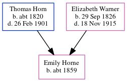

Emily Horne c1859 -
[ Home ] | [ Calendar ] | [ Surnames Index ] | [ Census Index ] | [ Family History ]A dressmaker and the child of Thomas Horn (a farm bailiff) and Elizabeth Warner (a general shopkeeper), Emily Horne, the great-great-aunt of Nigel Horne, was born in St Peters, Thanet, Kent, England c. 18591,2 and baptized there on Mar 13, 1859.
During her life, she was living at Northdown, Margate, Kent, England on Apr 2, 18713; at Buddles Farm, Dane Court Road, St Peters, Thanet, Kent on Apr 3, 18812; at 194 Reading Street, St Peters, Thanet, Kent on Apr 5, 1891; and at 1 Welbeck Terrace, Reading Street, St Peters, Thanet, Kent on Mar 31, 1901.
Parents
- Thomas was born c. 1820
- Elizabeth Ann was born on Sep 29, 1826
Citations
- 1871 England Census Online publication - Provo, UT, USA: The Generations Network, Inc., 2004.Original data - Census Returns of England and Wales, 1871. Kew, Surrey, England: The National Archives of the UK (TNA): Public Record Office (PRO), 1871. Data imaged from the National
- 1881 England Census Online publication - Provo, UT, USA: The Generations Network, Inc., 2004. 1881 British Isles Census Index provided by The Church of Jesus Christ of Latter-day Saints © Copyright 1999 Intellectual Reserve, Inc. All rights reserved. All use is subject to the
- 1871 England, Wales & Scotland Census - Findmypast (was age 12 and the daughter of the head of the household)
- 1891 England, Wales & Scotland Census - Findmypast (was age 32 and the daughter of the head of the household)
- 1881 England, Wales & Scotland Census - Findmypast (was age 22 and the daughter of the head of the household)
Family Tree
Generated by ged2site. Last updated on Jun 11, 2024